측량기능사 (2003-03-30 기출문제)
1과목: 임의 구분
1. 실제거리 60m를 도상에서 10㎝로 나타낸 축척은?
- 1/300
- 1/400
- 1/500
- 1/600
(정답률: 85%)

2. 동일 측점수에 비하여 피복 면적이 다른 삼각망에 비하여 넓으므로 넓은 지역의 측량에 적당한 삼각망은 다음 중 어느 것인가?
- 유심 삼각망
- 사변형 삼각망
- 단열 삼각망
- 복심 삼각망
(정답률: 58%)
3. 거리가 6km 떨어진 두점의 각관측에서 측각오차가 1″ 일 때 발생하는 오차는 몇 cm인가?
- 2.5cm
- 2.9cm
- 3.2cm
- 3.5cm
(정답률: 37%)
4. 관측값의 신뢰도를 표시하는 수치를 무엇이라고 하는가?
- 오차
- 경중률
- 최확치
- 정확치
(정답률: 59%)
5. 수준측량을 할 때 높이의 기준이 되는 면을 무엇이라 하는가?
- 최고 고조면
- 최고 저조면
- 지오이드면
- 평균 해수면
(정답률: 74%)
6. 앨리데이드의 주요 용도가 아닌 것은?
- 목표물을 시준 한다.
- 측점을 동일 연직선상에 있게 한다.
- 시준선을 도상에 표시 한다.
- 평판을 정준 한다.
(정답률: 40%)
7. 한 측점에 평판을 세우고, 그 점 주위에 있는 목표점의 방향과 거리를 측량하여 트래버스의 형태나 지물의 위치 및 지형을 측량하는 방법은?
- 방사법
- 전진법
- 전방 교회법
- 후방 교회법
(정답률: 63%)
8. 일반적인 측량에 많이 이용되는 좌표는?
- 극좌표
- 평면직각좌표
- 구면좌표
- 사좌표
(정답률: 71%)
9. 다음 배각법의 장점에 대한 설명 중 틀린 것은?
- 각을 읽을 때 생기는 오차를 1/n로 줄일 수 있다.
- 버어니어로 읽을 수 있는 최소눈금보다 작은 각을 측정할 수 있다.
- 높은 정밀도로 측정각을 얻을 수 있다.
- 단각법 보다 빠른 결과를 얻을 수 있다.
(정답률: 47%)
10. 다음중 앨리데이드 검사와 조정에 알맞지 않는 것은?
- 양 시준판을 자의 밑면에 대하여 앞뒤로 기울지 않고 직각이 되게 할 것
- 양 시준판이 자의 밑면에 대하여 좌우로 기울지 않고 직각이 되게 할 것
- 앨리데이드의 자 끝이 직선일 것
- 기포관축과 자의 밑면이 수직할 것
(정답률: 50%)
11. 평판의 3가지 조건에 해당되지 않는 것은?
- 정준
- 구심
- 조작
- 표정
(정답률: 83%)
12. 삼각측량에서 표차의 합이 199.7 이고 Σlog sin A -Σlog sin B의 값이 0.000⑤ 일 때 보정량 값은?
- ± 2.1″
- ± 2.3″
- ± 2.5″
- ± 2.7″
(정답률: 46%)
13. 자북선과 자오선(또는 진북선)이 이루는 각을 무엇이라 하는가?
- 허차
- 잔차
- 편차
- 복차
(정답률: 65%)
14. 인공 위성을 이용한 위치 측정에서 주로 사용되는 좌표계는?
- 평면 직각 좌표계
- 3차원 직각 좌표계
- TM투영법
- UTM좌표계
(정답률: 55%)
15. 수준측량을 할 때 전,후의 시준거리를 같게 취하고자하는 중요한 이유는?
- 표척의 영점 오차를 없애기 위하여
- 표척 눈금의 부정확으로 생긴 오차를 없애기 위하여
- 표척이 기울어져서 생긴 오차를 없애기 위하여
- 구차 및 기차를 없애기 위하여
(정답률: 70%)
16. Σ B.S = 7.256m, Σ F.S = 6.543m 이다. A 점의 지반고 G.H = 30.000m일 때 B점의 지반고(G.H)는 얼마인가? (단, A 에서 B점을 향한 측량)
- 29.287m
- 30.713m
- 31.528m
- 33.799m
(정답률: 60%)
17. 다음 중 수준점을 가장 올바르게 설명한 것은?
- 어떤 점에서 중력방향에 직각인 점
- 어떤 면상의 각점에서 중력의 방향에 수직한 곡면
- 기준면에서부터 어떤 점까지의 연직거리를 정확히 측정하여 표시한 점
- 어떤 점에서 지구의 중심방향에 수직인 점
(정답률: 75%)
18. 우리나라의 2등 왕복수준측량에서 편도 4km 측량시 표고허용 오차는?
- ± 3mm
- ± 10mm
- ± 15mm
- ± 20mm
(정답률: 32%)
19. 각관측에서 망원경을 정, 반으로 관측 평균하여도 소거되지 않는 오차는?
- 시준축 오차
- 수평축 오차
- 연직축 오차
- 외심 오차
(정답률: 52%)
20. 수준측량의 야장기입 방법에서 종단 측량과 같이 많은 중간점의 지반고를 구할 때 편리한 야장은?
- 고차식 야장
- 기고식 야장
- 승강식 야장
- 교호식 야장
(정답률: 79%)
2과목: 임의 구분
21. 방위각이 278° 20'40" 인 측선의 방위는?
- N81° 39'20"W
- N81° 20'40"E
- N81° 39'20"E
- N98° 20'40"W
(정답률: 33%)
22. 어느 측선의 거리가 86.61m 이고 방위각이 10° 4′ 일때 이 측선의 위거는 얼마인가?
- 65.277 m
- 85.277 m
- 1⑤.277 m
- 125.777 m
(정답률: 49%)
23. 표에서 합위거, 합경거를 이용하여 페합트래버스의 면적을 계산한 것은?
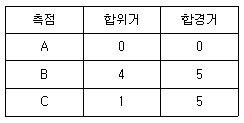
- 30.5m2
- 15.5m2
- 7.5m2
- 4.0m2
(정답률: 48%)
24. 다음 삼각망에서 BC 측선의 변장은 얼마인가? (단,
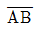
= 300m, ∠A = 59° 30' 40", ∠B = 69° 20' 50", ∠C = 51° 08' 30")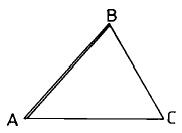
- 360.499 m
- 331.987 m
- 325.765 m
- 271.095 m
(정답률: 35%)
25. 도면과 같은 귀심계산에서 T를 구하는식중 맞는 것은?
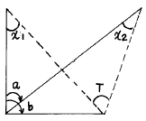
- T=a+x1+x2
- T=a+x1-x2
- T=b+x1-x2
- T=b+x1+x2
(정답률: 39%)
26. A점에 트랜싯을 세우고 B점에 표척을 세워 측량한 결과, 기계 높이 1.4m, 상시거 1.6m, 하시거 1.0m, 연직각 15°를 얻었다. A점의 표고가 20m일 때 B점의 표고는? (단, K = 100, C = 0 이다.)
- 34.8m
- 35.1m
- 35.4m
- 36.4m
(정답률: 24%)
27. 수준측량의 5㎞에 대한 허용오차가 15㎜일 때 2㎞ 수준측량의 허용오차로 가장 가까운 값은?
- 3㎜
- 6㎜
- 9㎜
- 12㎜
(정답률: 25%)
28. 삼각측량의 작업순서가 옳은 것은?
- 답사선점 → 조표 → 측정 → 계산
- 조표 → 측정 → 답사선점 → 계산
- 답사선점 → 측정 → 조표 → 계산
- 조표 → 답사선점 → 측정 → 계산
(정답률: 78%)
29. 기선 측정시 경사로 인한 보정치(C)를 구하는 식은? (단, h : 기선 양단의 고저차, L : 경사거리)
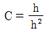
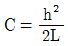
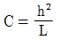
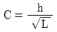
(정답률: 77%)
30. 방향각법에서 관측한 각의 오차 제한을 위한 용어의 설명 중 옳지 않는 것은?
- 동일 시준점의 1대회 망원경 정· 반위로 관측한 값의 초수의 차를 교차라 한다.
- 동일 시준점의 1대회 망원경 정· 반위로 관측한 값의 초수의 합을 배각이라 한다.
- 각 대회 동일 시준점에 대한 교차의 최대와 최소의 차를 관측차라 한다.
- 각 대회 동일 시준점에 대한 배각과 배각의 평균과의 차를 배각차라 한다.
(정답률: 37%)
31. 다음 트래버스 측량에서 P점의 좌표가 Xp = -2,000m, Yp = +1,000m이고 PQ의 거리는 1.5km, PQ의 방위각이 60° 일 때 Q점의 좌표는?
- XQ = -1,350m, YQ = +2,399m
- XQ = -1,250m, YQ = +2,299m
- XQ = -1,350m, YQ = +2,199m
- XQ = -1,250m, YQ = +2,099m
(정답률: 52%)
32. 평탄지의 트래버스 측량에서 16변인 내각의 관측오차가 1'30"일 때 측각의 처리방법은?
- 재측량한다.
- 각의 크기에 비례하여 배분한다.
- 각의 크기에 관계없이 등분배한다.
- 변 길이의 역수에 비례하여 각각에 배분한다.
(정답률: 35%)
33. 평판 측량에서 폐합 오차가 허용오차 이내일 경우 어떻게 처리하는가?
- 변의 길이에 비례하여 배분
- 각의 크기에 비례하여 배분
- 각의 크기에 반비례하여 배분
- 변의 크기에 반비례하여 배분
(정답률: 54%)
34. 거리 3km에 대한 수준측량의 허용오차가 ± 20mm일 때 4㎞에 대한 오차량은?
- 12.13mm
- 20.13mm
- 23.09mm
- 40.27mm
(정답률: 30%)
35. 어느 측선의 위거가 15m, 경거가 20m일 때 측선의 길이는 얼마인가?
- 10m
- 15m
- 20m
- 25m
(정답률: 35%)
36. 어느 지형도에서 주곡선의 간격이 5m마다 표시되어 있다면 계곡선의 간격은 얼마인가?
- 2.5m
- 25m
- 50m
- 100m
(정답률: 50%)
37. 다음 중 복심곡선의 설명으로 가장 적합한 것은?
- 노선의 비탈이 변화하는 곳에 1개의 원호로 된 곡선
- 2개이상의 다른 반지름의 원곡선이 1개의 공통접선의 같은 쪽에서 연속하는 곡선
- 직선부와 원곡선부, 곡선부와 원곡선 사이에 넣는 특수곡선
- 2개의 원곡선이 1개의 공통접선의 양쪽에 서로 곡선 중심을 가지고 연속된 곡선
(정답률: 49%)
38. 다음 중 사진측량과 평판측량을 비교할 때 사진측량의 장점이 아닌 것은?
- 축척변경이 용이하다.
- 동체(動體)측정에 의한 보존이 용이하다.
- 분업에 의해 작업하므로 능률적이다.
- 대축척 측량일수록 경제적이다.
(정답률: 34%)
39. 지형도 표시법에서 하천, 항만, 해양 등에 일정한 간격으로 표고 또는 수심을 측정하여 도상에 숫자로 기입하는 방법은?
- 음영법
- 우모법
- 채색법
- 점고법
(정답률: 62%)
40. 다음 그림과 같은 사변형의 면적은?
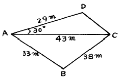
- 914.98m2
- 826.15m2
- 634.38m2
- 371.35m2
(정답률: 31%)
3과목: 임의 구분
41. 전면적이 200m2, 전토량이 1,080m3일 때 기준면상으로부터의 높이는?
- 5.0m
- 5.1m
- 5.2m
- 5.4m
(정답률: 40%)
42. 사진상의 명확한 두 점 A, B의 거리를 측정한 결과 22.18cm이었다. 같은 두 점을 1/50,000 지형도상에서 측정하니 11.9cm이었다면 이 사진의 축척은?
- 약 1/18,000
- 약 1/25,000
- 약 1/27,000
- 약 1/32,000
(정답률: 15%)
43. 노선측량의 단곡선 설치에서 많이 사용되는 방법으로 트랜싯으로 접선과 현이 이루는 각을 재고 테이프로 거리를 재어 곡선을 설치하는 방법은?
- 편각설치법
- 접전설치법
- 종거설치법
- 지거설치법
(정답률: 54%)
44. 다음 그림에서 B점의 표고는 100m이고 스타디아 정수 K=100, C=0 일 때 A점의 표고를 구한 값 중 옳은 것은? (단, 협장은 0.95m 이다.)
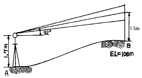
- 42.893m
- 44.393m
- 42.693m
- 57.107m
(정답률: 13%)
45. B.C의 위치가 No12+16.404m이고 곡선의 반지름이 200m, 중심말뚝의 간격이 20m일 때 시단현에 대한 편각은?
- 3° 30'54"
- 2° 30'54"
- 1° 30'54"
- 0° 30'54"
(정답률: 22%)
46. 스타디아 측량을 할 때 시준고를 기계고와 같게 하는 이유는?
- 시준을 편리하게 하기 위하여
- 오차를 작게 하기 위하여
- 계산을 간단하게 하기 위하여
- 외업을 효과적으로 하기 위하여
(정답률: 34%)
47. 아래 그림과 같이 토지를 구획정리하고자 한다. 계획고를 0.0m로 할 경우 토량은 얼마인가?
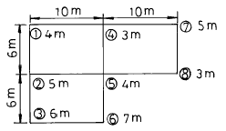
- 695m3
- 795m3
- 895m3
- 995m3
(정답률: 38%)
48. 사진측량에서 인공 입체시 하는 경우 대상물이 과장되어 보이는 현상을 무엇이라 하는가?
- 안고감
- 시차차
- 촬영도
- 과고감
(정답률: 56%)
49. 스타디아 측량의 장점이 아닌 것은?
- 작업이 간편하다.
- 수평거리와 고저차를 모두 측정할 수 있다.
- 높은 정확도를 요하는 곳에 쓰인다.
- 지형의 기복에 영향을 받지 않는다.
(정답률: 42%)
50. 다음 중 경사변환선에 대한 설명으로 옳은 것은?
- 지표면이 높은 곳의 꼭대기 점을 연결한 선
- 동일방향의 경사면에서 경사의 크기가 다른 두 면의 접합선
- 경사가 최대로 되는 방향을 표시한 선
- 지표면의 낮거나 움푹 패인 점을 연결한 선
(정답률: 59%)
51. 기본 측량의 실시 공고는 일간 신문에 게재하거나 당해 시도의 게시판에 며칠 이상 게시하는 방법으로 하는가?
- 30일
- 20일
- 15일
- 7일
(정답률: 33%)
52. 기본측량의 측량성과를 사용하여 지도등을 간행하여 발행 또는 배포하는 자가 측량성과 또는 지도 등에 꼭 명시해야 할 사항은?
- 사용한 측량성과의 도곽설정 또는 투영의 종류
- 사용한 측량성과의 지형 지물의 표시에 관한 사항
- 사용한 측량성과의 주기 및 기호표시에 관한 사항
- 사용한 측량성과 또는 측량기록의 종류
(정답률: 27%)
53. 기본측량의 실시 공고는 누가하는가?
- 건설교통부장관
- 국립지리원장
- 시· 도지사
- 측량협회장
(정답률: 24%)
54. 다음 일반측량 중 공공측량으로 지정할 수 없는 것은?
- 촬영지역의 면적이 1㎞2 이상인 측량용 사진의 촬영
- 측량실시 지역의 면적이 1㎞2 이상인 지형측량
- 측량노선의 길이가 5㎞ 이상인 수준측량
- 국립지리원장이 발행하는 지도의 축척과 동일한 축척의 지도제작
(정답률: 40%)
55. 다음 중 측량업 등록 신청서에 첨부하여야 할 서류가 아닌 것은?
- 기술능력을 갖춘 사실을 증명하는 서류
- 법인인 경우 등기부 등본
- 장비를 갖춘 사실을 증명하는 서류
- 측량 기술자의 재산 명세서
(정답률: 63%)
56. 측량업의 등록을 한 자는 주된 영업소 또는 지점의 소재지 등이 변경된 경우에 변경등록을 하여야 한다. 이 때 변경이 있은 날로부터 며칠이내에 등록하여야 하는가?
- 10일
- 20일
- 30일
- 60일
(정답률: 60%)
57. 측량 심의회는 국립지리원장의 자문에 의해 다음 사항을 심의 한다. 해당되지 않는 사항은?
- 기본측량에 관한 계획의 수립 및 실시
- 측량도서의 발간
- 측량용역대가의 기준에 관한 사항
- 측량기술의 연구발전에 관한 사항
(정답률: 35%)
58. 정당한 사유없이 측량의 실시를 방해한 경우 받는 벌칙은?
- 3년 이하의 징역 또는 1천만원 이하의 벌금
- 2년 이하의 징역 또는 500만원 이하의 벌금
- 1년 이하의 징역 또는 300만원 이하의 벌금
- 200만원 이하의 과태료
(정답률: 15%)
59. 다음중 국립지리원장이 발행하는 지도의 축척이 아닌 것은 어느 것인가?
- 5000분의 1
- 1만분의 1
- 5만분의 1
- 3000분의 1
(정답률: 48%)
60. 측량업의 종류가 아닌 것은?
- 지도제작업
- 일반지적측량업
- 연안조사측량업
- 항공사진도화업
(정답률: 21%)